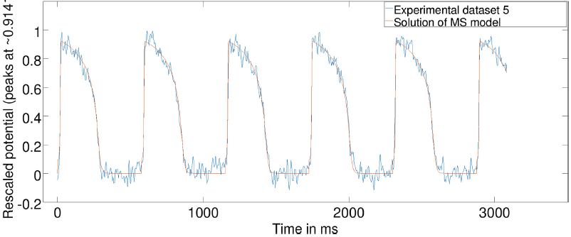

Research areas and projects:
1. Biomedical Imaging (MR and optical) and associated analysis
|
Pre-clinical MR study (Mihaela, Jen, Xiuling) |
Segmentation of fibrosis with histological validation |
A. High resolution imaging of fibrosis using 1.5T and 3T MR scanners - I have employed 3D MRI to identify subtle structural characteristics of arrhythmia substrate and heart failure, using pre-clinical pig models of myocardial focal fibrosis (post-infarction) and diffuse fibrosis (post-chemotherapy with doxorubicin); - My lab has developed and used image analysis tools for scar segmentation from high resolution contrast-enhanced (LGE/T1*) or diffusion-weighted MR images, along with quantitative histological validation. |
|
Beating heart, ex vivo |
Optical imaging: recorded action potentials during VT/VF in explanted pig heart |
B. Optical fluorescence imaging using voltage sensitive dyes - I developed a Langendorff perfusion system combined with the first stereoscopic optical imaging set-up, built specifically for large explanted hearts; - I studied the action potential propagation and restitution properties at organ level in healthy and infarcted pig hearts using optical fluorescent dyes sensitive to transmembrane voltage. |
2. Interventional imaging
|
In action - preclinical EP study in pig: (left photo) with Terenz, Sudip Ghate (Biosense, J&J), Dr Sheldon Singh (Sunnybrook) and Jen; (right photo) Mihaela. |
Translational interventional imaging: - I have established preclinical models of ventricular arrhythmia in chronically infarcted pigs, along with planning of EP procedures guided by high-resolution MR images. - My lab performed x-ray guided electro-anatomical cardiac preclinical interventions in collaboration with cardiologist Dr. Sheldon Singh (Sunnybrook), for which we routinely use the CARTO system (Biosense Webster, J&J) to record intracardiac electrograms and detect arrhythmogenic foci as targets for ablation. |
3. Multi-scale image-based models for electro-mechanical simulations
|
Anatomical mesh construction: Integration of myocardial fiber direction (to account for muscle anisotropy), tissue types (scar and healthy zones) into 3D heart models |
|
MR image-based predictive models: - We have developed accurate personalized 3D anatomical heart meshes and biophysical models from segmented MR images; - We have integrated multi-scale information from cellular level (fiber direction), tissue level (electro-mechanical properties of healthy and structurally damaged tissue zones) and organ level (biventricular heart); - I have worked with Inria-Epione group (France) to couple meshes with Finite Element models and predict via simulations: electrical propagation, arrhythmia risk, heart contraction, and outcome of ablation. Together, we calibrate and validate models’ output by assimilating experimental data into predictive models. |
|
Model validation: Measured electrical wave propagation vs. simulated propagation (red is early activation time, blue is late activation times LAT, in ms) |
|
Collaborative research projects (most recent)
|
MR image-guided RF ablation (Krahn et al 2018) |
With Philippa (histo-lab) |
1. Novel MR imaging methods for real-time image-guided EP interventions and disease assessment Ongoing collaboration with Dr. Graham Wright (Sunnybrook Research Institute) and his students on: - real time image-guided RF ablation (Philippa Krahn) - cardiac image analysis (Matthew Ng) - under-sampled MR recon for scar detection (Li Zhang) - motion correction for real time MR studies (Robert Xu) - real time MR-guided EP mapping (Samuel Oduneye) - collagen detection using ultrashort echo (Adrienne Siu). |
|
Biomechanical heart contraction models |
Visiting the Inria-Epione group (FR) |
2. Computational heart modelling - collaboration with Dr. Maxime Sermesant (Inria-Epione group, Nice, France) - we optimize mathematical parameters in 3D heart models using data assimilation from images & physiological data: PersoCardioLearn - we will expand our work by building upon machine learning techniques for prediction of critical sites of ablation; - we founded the STACOM forum. |
|
Average geometry of the heart atlas |
Statistical fiber atlas created by Mia |
3. Mathematics applied to biomedical imaging - I collaborate with Dr. Mehran Ebrahimi and his student Mia Mojica (University of Ontario Institute of Technology, Oshawa), on building a statistical atlas of fiber directions from high resolution diffusion tensor (DT) MR images of explanted pig hearts, and on testing advanced denoising methods for contrast-enhanced MR images (Lorraine Ma). |
|
Fibrosis/collagen: scar & border zone |
Sedeen: image registration plug-in |
4. Quantitative analysis for digital histopathology - I work closely with Dr. Susan Newbigging-Camilleri (Toronto Centre for Phenogenomics – pathology core) to analyze and interpret histological images of myocardial tissue samples, and with Dr. Anne Martel (Sunnybrook) to register digitally scanned histology stained slides with MR images using the open-source Sedeen viewer. |
|
Patchy fibrosis (Sirius stain) under light versus polarized microscopy |
Mengyuan & Peter (Pop lab), with Jared (Vitkin lab) at AOMF facility |
5. Optical polarimetry for tissue characterization My collaboration with Dr. Alex Vitkin (UHN -Toronto) has been focused on using optical polarimetry to characterize structurally damaged tissue and loss of anisotropy in: - chronic collagenous fibrosis in infarcted porcine hearts; - acute radiofrequency (RF) ablation lesions. |
|
ADC map (left), FA map (middle) and fiber directions through the heart wall |
6. Novel image analysis methods - I collaborate with Dr. Kaleem Sidiqqi (McGill University, Montreal, Quebec) on testing novel methods (e.g. Cartan frames) to reconstruct the fibre directions from 3D diffusion tensor MR images to enable a transmural assessment of the myocardial muscle remodelling in the setting of structural heart disease (e.g. following infarction). |
|
 |
7. Numerical analysis and model optimization - I collaborate with Dr. Yves Bourgault (Dept. Mathematics, University of Ottawa) on parameterization and optimization of mathematical models using numerical analysis methods. For instance, we calibrate action potential wave features (up-stroke and duration) in the mathematical equations using measurements from optical fluorescence imaging of action potential wave at pixel level. |